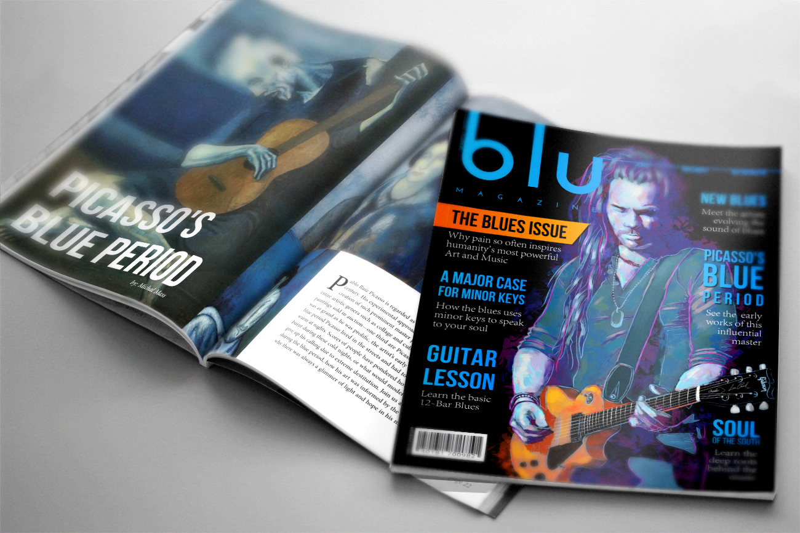
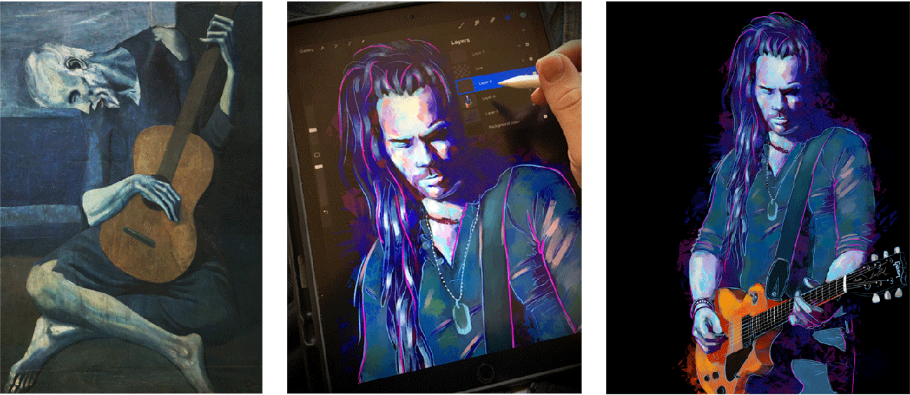

Project: Blu Magazine
Role: Graphic Design, Illustration
Tools: Pencil & Paper, Procreate, Photoshop, Affinity Designer

For the first month's issue of Blu, the theme was "art and music."

With this issue I saw an opportunity to incorporate my traditional skillset as an artist into the design of the cover. Since the main article of this issue was about Picasso's Blue period, I illustrated the cover as a direct reflection of his iconic painting "The Old Guitarist."

Cover illusrtation painted digitally with Procreate on an iPad Pro.
The visual problems presented by the blu magazine project required a diverse range of design solutions including illustration, photo manipulation, grid-based layout design and typography. It was a lot of fun creating the stories for each issue while working within the contraints of keeping them all related to the theme of "blue."

Sample two-page layout design utilizing a large, bold typographic treatment.

One of the key lessons learned in the process of working on this project was the importance of establishing visual heirarchies through the use of contrast and scale to inform your typographic layouts, especially in editorial design. Explore the other issues below to see more!


Click on a cover to see the full case study.